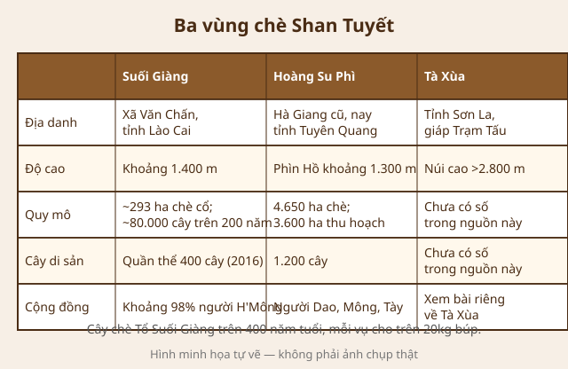

Trà Shan Tuyết: từ cây chè cổ thụ tới ấm trà
Tác giả: Ruler
Cầm trên tay một gói chè Shan Tuyết lần đầu, người mua thường hỏi bốn câu cùng lúc: vì sao gói này đắt hơn trà xanh thường, làm sao biết gói mình cầm là thật, về nhà pha ra sao cho đúng, và nên mua bao nhiêu thì vừa. Bài này trả lời theo đúng thứ tự đó. Mọi con số trong bài đều lấy từ các ghi chép công khai đã đọc trực tiếp — Wikipedia tiếng Việt, bài tổng hợp của Thuận Trà Thái Nguyên và bảng pha trà của Tiệm Nhà An — chỗ nào các nguồn ghi vênh nhau, bài ghi rõ. Bài chỉ nói về cách trồng, cách làm và cách pha, không khẳng định lợi ích sức khỏe của trà.
Vì sao một gói Shan Tuyết lại đắt
Tiền của một gói Shan Tuyết nằm ở ba chỗ: cây già, công hái và công sao. Rừng chè ở Suối Giàng có chừng 80.000 cây đã qua 200 năm tuổi; trong số đó nhiều cây tới 300 năm, theo Wikipedia tiếng Việt — con số này các nhà nghiên cứu chè xác định từ những năm 1960. Búp nằm trên ngọn cây cao, lại càng ít khi cây càng già, nên muốn hái búp tươi phải trèo lên tận ngọn. Búp hái về phải sàng lọc bằng tay: bỏ lá sâu, nâng niu để lớp lông tơ không rụng, rồi sao ngay trong vòng 4 giờ sau khi hái — để lâu búp sẽ ôi, nóng lên. Khâu sao vẫn làm bằng chảo thủ công: người sao canh lửa liên tục, đảo đều để búp không cháy cạnh mà lõi vẫn khô, và giữ cho lớp lông trắng trên búp không rơi hết.
Cái khó của sao Shan nằm ở chính búp chè: búp dày hơn hẳn búp chè trung du, nước bên trong lại nhiều. Lửa mà to thì cạnh búp cháy xém trong khi lõi vẫn ẩm; lửa mà nhỏ thì búp bị ngốt, lớp lông trắng rụng mất. Người làm trà ở xưởng Thuận Trà — nơi tự sao chè trung du lá nhỏ ở Đại Từ – La Bằng — nhận xét sao búp Shan khó hơn hẳn sao lá nhỏ. Máy móc ngày nay đã gánh nhiều khâu, sản lượng và bảo quản đều tốt hơn, nhưng khâu sao vẫn phải có thợ có tay nghề.
Đổi sang tiền mỗi ấm, bức tranh rõ hơn tiền mỗi gói. Rẻ nhất trong các món kể trên là Trà Bắc Truyền Thống: 250.000đ một ký, pha được chừng 100 ấm, mỗi ấm tốn khoảng 2.500đ tiền trà. Shan Tuyết thì khác hẳn: một túi hồng trà hoặc bạch trà 100 g giá 500.000đ, nhà sản xuất hướng dẫn pha được 8–10 ấm, mỗi ấm cho 3–4 người uống 5–7 nước — tính ra 50.000–62.500đ tiền trà cho một ấm. Dạng gói nhỏ thì dễ tính hơn: Trà Xanh Shan Tuyết Đậm Vị có hộp 25 gói 10 g giá 200.000đ, mỗi gói 8.000đ, vừa một ấm; hộp quà 20 gói giá 250.000đ thì mỗi gói 12.500đ vì có thêm hộp biếu. Một điều cần nói thẳng từ đầu: Thuận Trà không bán chè Suối Giàng. Trà xanh trung du là trà họ tự làm ở Đại Từ – La Bằng; Shan Tuyết họ chỉ phân phối dòng Hoàng Su Phì — do HTX chè Phìn Hồ làm ra.
Nhìn gói chè mà biết: lá, búp, lông tuyết và màu nước
Muốn hiểu chữ "tuyết" trong tên gọi, nhìn vào lá và búp. Thuận Trà dẫn lại trang Wikipedia tiếng Anh về cây chè: lá dài 4–22 cm, cây mọc trong rừng thường cho lá to và dày hơn cây trồng trong vườn, và trà ngon thường mọc ở nơi cao tới 2.200 m — Shan Tuyết nằm trong nhóm chè lá to của vùng núi cao. Theo Wikipedia tiếng Việt, lá chè Suối Giàng thì to, dày, màu xanh đậm; búp to, mập, phủ lông tơ trắng như tuyết. Cây càng già, vỏ càng xù xì, cành càng cong queo, thân càng phủ trắng mốc, lá càng xanh ngắt.
Uống một chén Shan Tuyết rồi mới quay lại nhìn nắm chè khô, bạn sẽ hiểu vì sao nó khác chè xanh thường. Nước trong chén sánh vàng như mật ong, chát vào chậm, ngọt đọng lại lâu sau khi nuốt. Lá sau khi pha nở to, dày, dai tay — khác hẳn lá chè trung du nhỏ và mỏng. Cầm nắm chè khô lên, cánh to và xoăn lỏng, mặt cánh ánh bạc vì phủ một lớp lông mịn, sờ vào thấy rõ. Cái tên "trà ngậm sương" cũng từ đó mà ra: cây sống nhờ hơi đất, hơi sương giữa rừng núi, quanh năm mây mù nên ít sâu bệnh.
Có hai con số người bán hay nói quá: tuổi cây và danh hiệu di sản. Về tuổi cây, cây chè Tổ là cây được ghi chép lâu đời nhất ở Suối Giàng — trên 400 năm tuổi; đa số cây trong rừng chỉ trong khoảng trên 100 đến 300 năm. Người bán nói "cây nghìn năm" thì nên hỏi lại con số đó lấy từ đâu. Cây chè Tổ, theo Wikipedia, đã hơn 400 năm tuổi; thân cây to đến mức một người ôm không xuể, tán rộng hơn 20 m², mỗi vụ hái được hơn 20 kg búp. Về danh hiệu, cái cần nhớ là nó ghi tên quần thể cây chứ không cấp cho từng gói chè. Bốn thôn có cây được ghi tên là Giàng A, Giàng B, Pang Cáng và Bản Mới — 400 cây, ghi tên từ ngày 16/2/2016, đơn vị ghi tên là Hội Bảo vệ Thiên nhiên và Môi trường Việt Nam. Thấy gói nào in chữ "chè di sản", cứ hỏi thẳng người bán: búp trong gói hái từ cây nào, ở thôn nào. Hoàng Su Phì cũng có quần thể được ghi tên, còn lớn hơn: 1.200 cây.
Tên gọi và địa danh dễ nhầm
Suối Giàng ở độ cao chừng 1.400 m so với mặt biển, quanh năm mát và nhiều mây mù. Sau khi sắp xếp lại đơn vị hành chính vào năm 2025, địa danh của vùng chè trên Wikipedia tiếng Việt đổi thành xã Văn Chấn, tỉnh Lào Cai — trước đó là xã Suối Giàng thuộc huyện Văn Chấn, tỉnh Yên Bái. Vẫn sườn núi ấy, vẫn những gốc chè ấy, chỉ tên tỉnh trên giấy tờ đổi, nên gói in cũ ghi Yên Bái cũng không sai. VnExpress năm 2013 tả không khí nơi đây trong lành, mát mẻ suốt bốn mùa, rồi so sánh nơi đây với Sa Pa, Tam Đảo, Đà Lạt; cũng theo bài báo đó, từ trung tâm thị trấn Văn Chấn lúc đó lên Suối Giàng dài khoảng 12 km, qua vách đá rồi tới rừng nguyên sinh.
Suối Giàng, Hoàng Su Phì và Tà Xùa là ba vùng Shan Tuyết hay được nhắc cùng nhau. Nói cho công bằng, mỗi nơi có cộng đồng giữ chè với cách làm riêng, khác nhau trước hết ở vị trí, độ cao, quy mô và dạng thành phẩm hay gặp, chứ không có vùng nào "hơn" vùng nào. Suối Giàng có chừng 293 ha chè cổ, cây trên 200 năm tuổi đếm được khoảng 80.000, do người H'Mông giữ rừng — Wikipedia ghi khoảng 98% dân cư ở đây là người H'Mông — và dạng hay gặp nhất là lục trà sao chảo, cánh ánh bạc, nước vàng như mật ong. Hoàng Su Phì trước đây thuộc Hà Giang, giờ trên giấy tờ đã thuộc tỉnh Tuyên Quang; vùng chè Phìn Hồ ở chừng 1.300 m, cả vùng có 4.650 ha chè, 3.600 ha trong số đó đã cho thu hoạch, mỗi năm cho hơn 14.000 tấn búp tươi, và ở đây gặp đủ dạng: từ lục trà, hồng trà, bạch trà tới trà ép bánh. Tà Xùa nằm ở tỉnh Sơn La, gần xã Trạm Tấu bên Lào Cai; về Tà Xùa, chỉ có một con số là độ cao: đỉnh núi cao hơn 2.800 m — nhưng đó là độ cao của núi, không phải của từng nương chè. Chưa có số về diện tích hay cây di sản ở Tà Xùa trong các nguồn bài này đã đọc.
Một chỗ dễ lẫn nữa là hai cái tên chỉ khác nhau một dấu: "Phình Hồ" ở Trạm Tấu và "Phìn Hồ" ở Hoàng Su Phì là hai nơi khác nhau. Bài VnExpress năm 2018 kể tên những xã vùng cao có chè shan ở Yên Bái: Phình Hồ, Xà Hồ, Sùng Đô, Suối Quyền, Nậm Lành và Nậm Mười; còn HTX chè Phìn Hồ làm Shan ở Hoàng Su Phì. Vì vậy, gặp bao bì ghi chữ Hồ thì nhớ nhìn thêm tên huyện và tên tỉnh rồi mới kết luận. Ngoài ba vùng trên, Shan Tuyết còn mọc ở nhiều tỉnh khác — Wikipedia liệt kê thêm Lào Cai, Tuyên Quang, Thái Nguyên và Điện Biên — nhưng các nguồn bài này đã đọc không có đủ số liệu riêng cho từng nơi, nên bài không đi sâu thêm.

Hình minh họa tự vẽ — không phải ảnh chụp thật.
Pha: chọn loãng hay đậm trước, rồi mới đong trà
Với loại chè xanh Shan Tuyết này — sao theo kiểu lục trà — có hai mốc đã đọc được — một của HTX chế biến chè Phìn Hồ tại Hoàng Su Phì và một của Tiệm Nhà An. Hai mốc này khác nhau rõ rệt về lượng trà, nhưng đó là hai cách pha khác nhau, không phải một bên ghi sai. Quyết định đầu tiên của người pha là chọn mốc nào: mốc loãng thì khó đắng, hợp người mới; mốc đậm thì nước dày hơn, hợp người đã quen chè Shan.
Mốc loãng của Phìn Hồ dùng 5 g trà cho 250 ml nước ở 85–90°C, tráng nhanh một lượt bằng nước 85°C rồi đổ bỏ. Nước đầu hãm 30–45 giây; từ nước thứ hai trở đi, mỗi nước thêm 10–15 giây, pha được tổng cộng 4–5 nước. Mốc đậm của Nhà An dùng 4 g trà cho 100 ml nước, nước 90°C, hãm nước đầu 25 giây rồi các nước sau 35, 45, 60 và 80 giây. Tính ra mốc đậm dùng gấp đôi lượng trà trên cùng 100 ml nước so với mốc loãng. Nếu mới uống Shan Tuyết lần đầu, hãy bắt đầu theo mốc loãng, rồi tăng dần lượng trà nếu thấy nhạt. Lưu ý đừng lấy nước 100°C chế thẳng vào trà, vì nước quá nóng dễ làm gắt hương và tăng đắng.
Người mới hay mắc một lỗi: thấy người trong bản ngâm 10 phút thì về nhà cũng ngâm 10 phút. Cách đó chỉ đúng ở bản, vì búp Shan to và dày nên ra chất chậm, ngâm lâu vẫn không hỏng — còn ấm nhỏ ở phố, lượng chè ít hơn, nước ít hơn, ngâm như vậy là đắng gắt. Người trong bản pha bằng ấm đất nung đã cũ và nước suối đun sôi: tráng một lượt, chế đầy tới khi bọt trào ra, rồi đậy nắp lại. Mười phút sau mới rót — và rót chia làm hai lần, cho các chén đều màu, đều vị. Muốn thử kiểu này ở nhà, hãy pha "nửa liều": dùng ấm to hơn, giảm lượng chè còn khoảng một nửa so với lúc pha nhanh, rồi rót một chén sau 3–4 phút nếm trước — thấy vừa miệng thì dừng, đừng ngâm tiếp. Đây chỉ là gợi ý của Thuận Trà cho người mới, không phải cách pha của người trong bản.
Muốn pha một ấm cho 2–3 người theo mốc loãng, chuẩn bị ấm 200–300 ml — ấm đất hoặc ấm gốm giữ nhiệt là tốt nhất — và 5 g trà cho 250 ml nước (theo mốc đậm của Nhà An thì 10 g). Đun nước sôi rồi chờ nguội xuống 85–90°C; hồng trà và bạch trà thì theo nhiệt độ ghi trên gói. Tráng nhanh một lượt rồi đổ bỏ nước tráng. Nước đầu hãm 30–45 giây; các nước sau thì mỗi nước kéo dài thêm 10–15 giây. Lúc rót, rót quay vòng 2–3 lượt để các chén đều màu, như cách người Suối Giàng rót hai lượt ngày trước.
Mua bao nhiêu thì vừa, và giữ gói chè ra sao
Trước khi trả tiền, hỏi người bán bốn chuyện: trà là dạng nào, trà từ vùng nào, búp hái kiểu gì, và vụ hái nào. Hỏi dạng trước, vì dạng trà quyết định cách pha. Lục trà chát nhẹ, có hương cốm — hợp uống buổi sáng. Hồng trà lên men toàn phần nên nước sẫm màu, vị ngọt hơn — hợp buổi chiều. Bạch trà làm đơn giản nhất, chỉ héo rồi phơi, vị rất nhẹ. Trà ép bánh thì để được lâu, mua về không cần uống ngay. Mua sai dạng thì thất vọng không phải vì chè dở, mà vì cách pha trong đầu mình không hợp với gói trà trên tay. Tiền thường tăng theo độ non của búp: chỉ lấy một búp thì đắt nhất, rồi đến một tôm một lá, rẻ nhất là một tôm hai lá. Hỏi thêm vụ hái và năm hái: với lục trà, vụ càng gần thì hương càng còn rõ. Cuối cùng, hỏi ai sao chè, sao ở cơ sở nào, và cơ sở đó có giấy tờ an toàn thực phẩm hay không. Mua gói 10 g pha thử một ấm rồi mới mua nhiều là cách thử ít tốn nhất.
Gói chè mua về giữ được bao lâu là chuyện của cánh chè: cánh Shan vừa to vừa xốp, gặp hơi ẩm hay mùi bếp là hút vào ngay. Mở gói rồi thì đừng để hở: miệng gói phải cột chặt, gói phải ở chỗ khô, thoáng, không nắng, không mùi bếp. Nên uống hết trong vài ngày đến vài tuần; gói nào còn nguyên lớp hút chân không thì giữ được lâu hơn hẳn. Còn lịch hái thì khác: một năm người Suối Giàng hái chè ba vụ, vụ chè cuối cùng trong năm rơi vào tháng 8–9 âm lịch, sản lượng cả vùng khoảng 400–500 tấn mỗi năm theo báo chí năm 2018. Người giữ rừng chè ở đây chủ yếu là người H'Mông, bao đời nay sống bằng nghề hái chè, làm chè. Tuổi cây hầu như chỉ là ước lượng — dựa vào vòng gốc, chiều cao và lời kể của các thế hệ trong bản, ít khi khoan lấy vòng gỗ vì làm hại cây — nên con số "300 năm" hay "500 năm" cứ hiểu là tuổi ước tính, và người bán nói tuổi cây thì nên nói được con số đó lấy từ đâu.
Chuyện kể về Suối Giàng
Chuyện kể bắt đầu từ một vùng đất hoang sơ quanh năm chìm trong mây mù, nơi một nàng tiên rải hạt chè xuống. Hạt nảy mầm thành cây xanh tốt, lá to, búp trắng như tuyết vì phủ sương — đó là gốc tích của cái tên Suối Giàng, "suối của trời", theo truyền thuyết của người H'Mông mà Wikipedia ghi lại. Về sau, người H'Mông đi qua vùng ấy, ăn thử lá chè, nấu lá với nước suối để uống, rồi ở lại với loài cây lạ này. Bài này kể lại truyền thuyết đúng như nguồn ghi — đây là chuyện kể, không phải lịch sử đã xác định. Chưa ai xác định được cây chè có mặt ở Suối Giàng từ khi nào.
Cây chè Tổ không chỉ là cây già nhất rừng — mỗi mùa xuân, trước vụ hái đầu năm, người H'Mông ở Suối Giàng làm lễ cúng cây để nhớ ơn tổ tiên và trời đất đã cho cây chè. Lễ này nay đã thành một phần sinh hoạt văn hóa của cả vùng, và cũng là một lý do rừng chè cổ còn được giữ tới hôm nay thay vì bị chặt đi trồng cây khác.
Kết luận
Trà Shan Tuyết bắt đầu từ những cây chè cổ thụ mọc tản mát trên núi cao, có cây sống hàng trăm năm. Riêng ở Suối Giàng, cây trên 200 năm tuổi đếm được khoảng 80.000, ở độ cao khoảng 1.400 m, trong đó 400 cây đã được công nhận là Cây di sản từ ngày 16/2/2016. Khi mua, hãy hỏi dạng trà, vùng trà, kiểu búp và vụ hái, mua gói nhỏ pha thử trước, và nhớ rằng danh hiệu di sản ghi tên quần thể cây, không cấp cho từng gói chè. Khi pha, bắt đầu từ mốc loãng — 5 g cho 250 ml, 85–90°C, 30–45 giây — nếm từng nước, rồi chỉnh dần theo khẩu vị.
Nguồn tham khảo
- Wikipedia tiếng Việt, "Chè tuyết Suối Giàng" — khoảng 80.000 cây trên 200 năm tuổi, nhiều cây 300 năm; diện tích 293 ha (393 ha chè tuyết gồm 293 ha cổ thụ và 100 ha trồng mới); độ cao 1.400 m; 400 cây di sản ngày 16/2/2016; cây chè Tổ trên 400 năm, tán hơn 20 m², mỗi vụ trên 20 kg búp; 98% dân H'Mông; 3 vụ/năm, vụ cuối tháng 8–9 âm lịch; sao chảo thủ công; pha kiểu địa phương: ấm đất nung, nước sôi, chờ khoảng 10 phút, rót hai lượt (truy cập 24/11/2026): https://vi.wikipedia.org/wiki/Ch%C3%A8_tuy%E1%BA%BFt_Su%E1%BB%91i_Gi%C3%A0ng
- Thuận Trà Thái Nguyên, "Chè Shan tuyết Suối Giàng: 80.000 cây cổ thụ" — tên xã đổi sau sắp xếp 2025 (xã Văn Chấn, tỉnh Lào Cai); các con số vênh nhau 293 ha / 393 ha / 423 ha; Hoàng Su Phì 1.200 cây di sản; Phìn Hồ: 5 g/250 ml, 85–90°C, hãm 30–45 giây, 4–5 nước; phân biệt Phình Hồ và Phìn Hồ (truy cập 24/11/2026): https://thuantrathainguyen.com/blogs/news/che-shan-tuyet-suoi-giang-vung-che-co-van-chan-lao-cai
- Tiệm Nhà An, "Pha trà tại nhà: tỉ lệ, nhiệt độ và thời gian hãm" — Shan Tuyết 4 g/100 ml, 90°C, hãm 25, 35, 45, 60, 80 giây; trà xanh 4 g/100 ml, 80°C; ô long 5–6 nước, trà xanh 3–4 nước (truy cập 24/11/2026): https://tiemnhaan.com/ko/tra-viet/pha-tra
- VnExpress, Kim Anh, "Trà đặc sản Shan Tuyết trên đỉnh Suối Giàng", 3/9/2013 — không khí trong lành ví với Sa Pa, Tam Đảo, Đà Lạt; quãng đường 12 km từ thị trấn Văn Chấn; thân cây trắng mốc do địa y; người hái phải trèo lên cây (URL lấy từ liên kết trong bài Thuận Trà, nguồn 2; VnExpress hiện chặn trình duyệt tự động, trả 503, nên chưa mở trực tiếp được): https://vnexpress.net/tra-dac-san-shan-tuyet-tren-dinh-suoi-giang-2873868.html
- VnExpress, Vũ Đậu, "Chè shan tuyết 300 tuổi ở Suối Giàng", 15/2/2018 — diện tích 423 ha chè shan cả huyện Văn Chấn; cây mọc cách nhau vài mét; sản lượng 400–500 tấn/năm; danh sách xã vùng cao có chè shan: Phình Hồ, Xà Hồ, Sùng Đô, Suối Quyền, Nậm Lành, Nậm Mười (URL lấy từ liên kết trong bài Thuận Trà, nguồn 2; VnExpress hiện chặn trình duyệt tự động, trả 503, nên chưa mở trực tiếp được): https://vnexpress.net/thoi-su/che-shan-tuyet-300-tuoi-o-suoi-giang-3710681.html